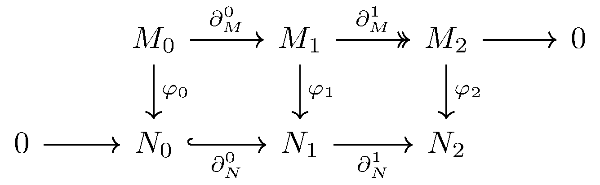

November 29th
Today I learned the Snake lemma as an example of diagram-chasing. As full disclosure, I did not write this entry until months after first reading this diagram chase, so we follow the exposition I give in June 2021.
Suppose we live in an abelian category, and we have the following diagram with exact rows.

The main point of the snake lemma (the part that I read on this day) is constructing a canonical $\delta$ map from $\ker\del_M^1$ to $\coker\del_N^0.$ For this, we black-box Mitchell's embedding theorem and put this category into a category of $R$-modules and begin the diagram chase.
The idea, now, is to pick up an element $m_2\in\ker\varphi_2$ and push it backwards along the diagram to reach $N_0.$ Note we cannot go left twice consecutively in a meaningful way because $\del_\bullet^1\circ\del_\bullet^0=0,$ so we travel $M_2\leftarrow M_1\to N_1\leftarrow N_0.$
Indeed, $\del_M^1$ is surjective, so we are promised an $m_1\in M_1$ such that $\del_M^1(m_1)=m_2.$ This choice is not canonical, but we do have the isomorphism\[\frac{M_1}{\ker\del_M^1}\cong\del_M^1(M_1)=M_2,\]so the choice of $m_1$ is unique up to the (now canonical) coset $m_1+\ker\del_M^1.$ By exactness, we are granted the canonical coset $m_1+\op{im}\del_M^0.$
Continuing, we go through $\varphi_1.$ Note that $\varphi_2(m_2)=0$ means $(\del_N^1\circ\varphi_1)(m_1)=(\varphi_2\circ\del_M^1)(m_1)=0,$ so $\varphi_1(m_1)\in\ker\del_N^1.$ By exactness, we also know $\varphi_1(m_1)\in\op{im}\del_N^0,$ so indeed, we are promised $n_0$ such that $\del_N^0(n_0)=\varphi_1(m_1).$ Note this $n_0$ is unique by the injectivity of $\del_N^0.$
The hope is that, with $m_1$ unique up to choice of coset $m_1+\op{im}\del_M^0,$ we have $n_0$ unique up to $n_0+\op{im}\varphi_0.$ So suppose $m_1'\in m_1+\op{im}\del_M^0$ and pick up $n_0'=(\del_N)^{-1}(\varphi_1(m_1')).$ The point is that\[\del_N^0(n_0-n_0')=\varphi_1(m_1-m_1')\in\op{im}\varphi_1\circ\del_M^0=\op{im}\del_N^0\circ\varphi_0.\]By injectivity, we conclude $n_0-n_0'\in\op{im}\varphi_0$ are indeed unique up to coset of $\op{im}\varphi_0.$ This completes the construction of $\delta.$ To review, our map is\[\left(\del_N^0\right)^{-1}\circ\varphi_1\circ\left(\del_M^1\right)^{-1},\]where we showed the answer is well-defined up to choice of coset $\op{im}\varphi_0$ at the very end.